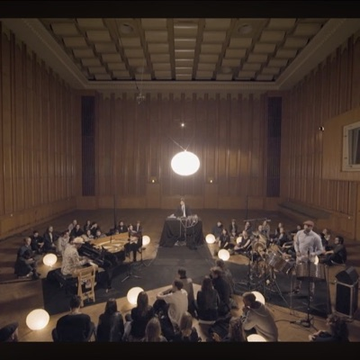
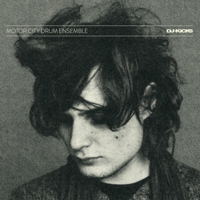
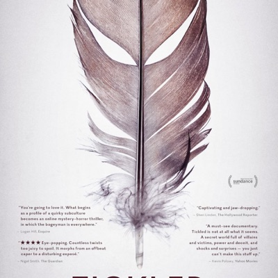

music
records, remixes, and films, made with collaborators around the world
-

Aron Ottignon, Sam Dubois, Rodi Kirk
Aron builds motifs at the piano while I shape them live with real-time sampling, granular synthesis and custom code. As a trio we recorded an LP for Blue Note, as well as many improv performances.
watch the Funkhaus session → -

Again (remix)
My rework of Again by Electric Wire Hustle, picked up by Motor City Drum Ensemble for his DJ-Kicks compilation.
hear it → -

Tickled (original score)
Music for the documentary. Part of a run of film scoring and placement work on HBO, Magnolia Pictures and Netflix.
trailer →